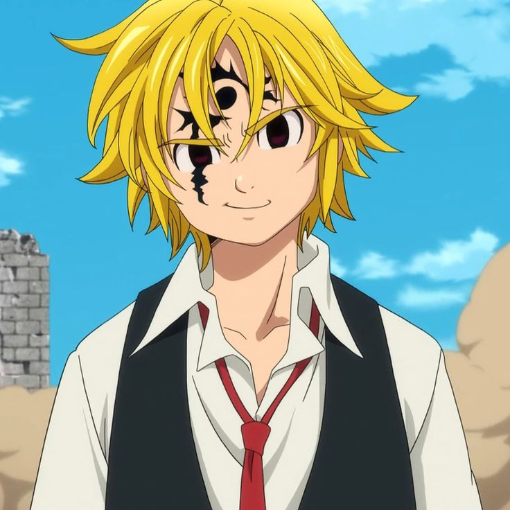
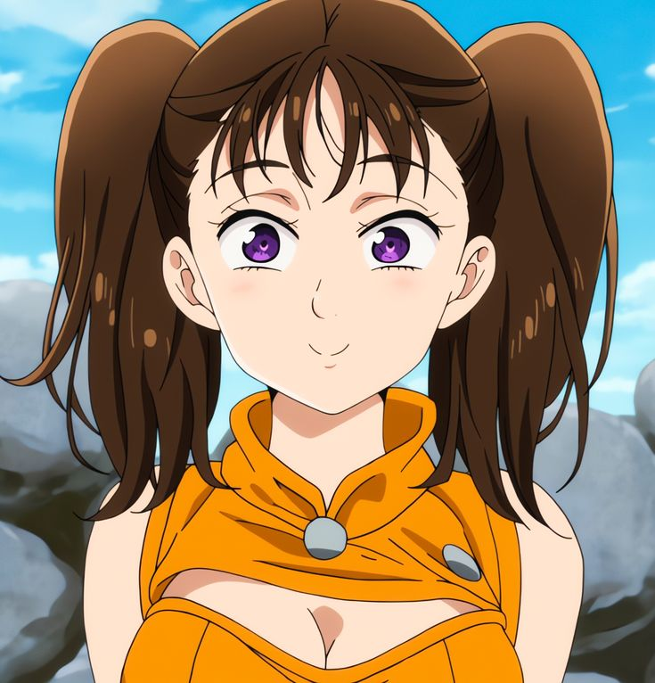
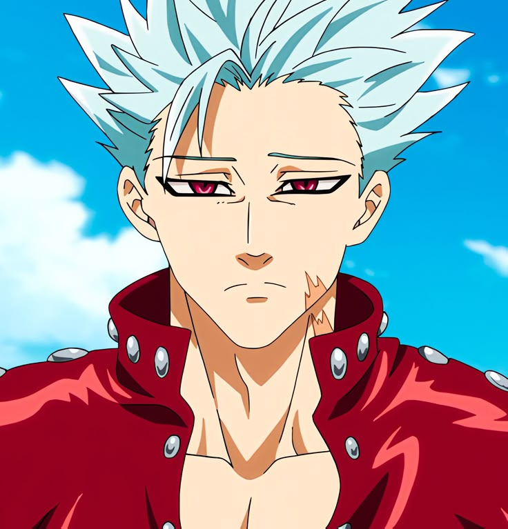
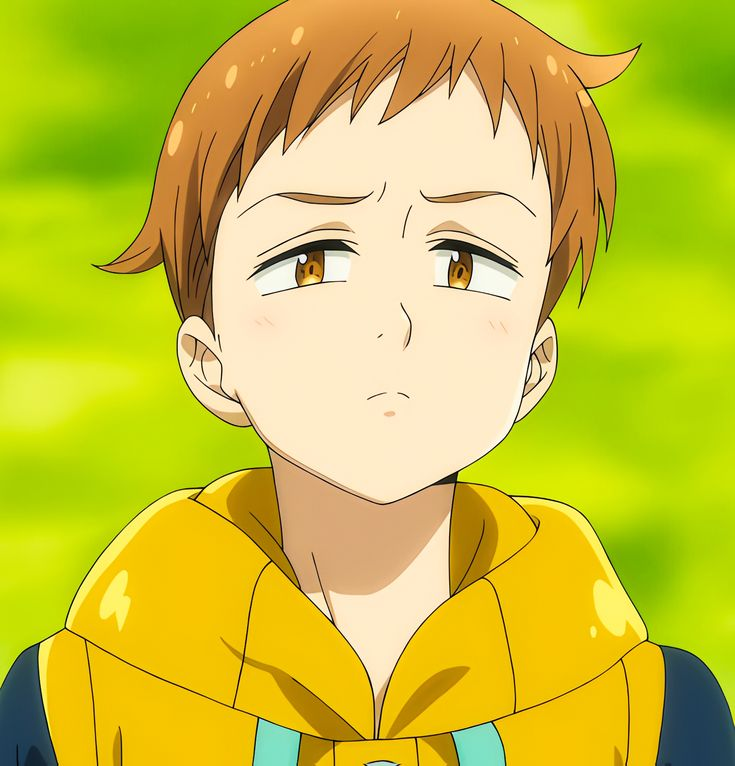
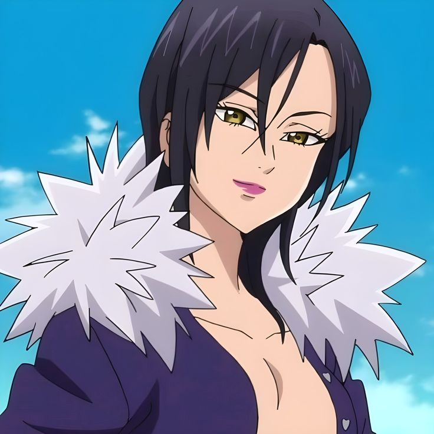
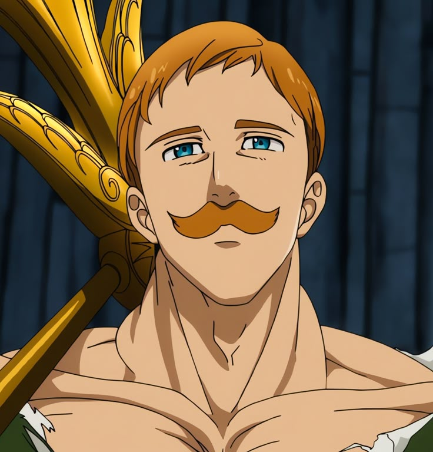

The Seven Deadly Sins
Os Cavaleiros Lendários dos Pecados Capitais

Os Cavaleiros Lendários dos Pecados Capitais
The Seven Deadly Sins (Nanatsu no Taizai) é um anime de fantasia medieval baseado no mangá de Nakaba Suzuki. A história se passa no Reino de Liones e acompanha um grupo lendário de cavaleiros conhecidos como “Os Sete Pecados Capitais”. Cada um deles carrega o símbolo de um pecado e possui um passado profundo, complexo e marcante.
A narrativa mistura magia, aventura, romance, drama e batalhas épicas. O mundo é habitado por humanos, demônios, fadas, gigantes e deuses, criando uma mitologia rica e cheia de mistérios.
A primeira temporada apresenta o universo, o reino e a busca pela verdade. Elizabeth inicia sua jornada ao encontrar Meliodas, e juntos começam a reunir os Pecados. É uma temporada com muito humor, descobertas e primeiras batalhas importantes.
Aqui, o anime se aprofunda na história dos clãs e no passado dos personagens. Novas ameaças ressurgem, trazendo perigo para todo o mundo. Cada Pecado precisa evoluir, emocionalmente e fisicamente, para encarar os novos desafios.
A trama fica muito mais densa. Conflitos antigos reaparecem, diferentes raças entram em tensão e o destino de várias regiões está em risco. É uma temporada focada em amadurecimento, origem dos poderes e decisões difíceis.
Segredos e maldições antigas começam a ser expostos. A ligação profunda entre alguns personagens recebe grande destaque. Cada Pecado precisa enfrentar seus demônios internos e definir quem realmente deseja ser.
A conclusão da jornada. Conflitos finais, escolhas importantes e o destino do mundo mágico sendo traçado. A temporada combina ação intensa com momentos emocionais e fecha arcos construídos desde o começo.
Capitão dos Sete Pecados Capitais. Meliodas é brincalhão, forte e extremamente protetor. Apesar da aparência infantil, guarda uma história antiga e um coração cheio de marcas. Seu senso de justiça e liderança guia o grupo, e sua força é lendária.

Diane é uma gigante com força incomparável, mas com um coração sensível e gentil. Busca aceitação, amor e um lugar no mundo. Sua jornada envolve entender seu valor além de sua força e aprender a lidar com suas emoções.

Ban é intenso, destemido e extremamente leal. Sua “ganância” representa sua luta por aquilo que ama. Marcado por perdas, ele se tornou resistente e emocionalmente profundo. Seu humor e coragem fazem dele um dos personagens mais amados.

Rei das Fadas, inteligente e sensível. Sua preguiça é simbólica, ligada à culpa por acontecimentos passados. King tem um coração puro e grande senso de responsabilidade, além de dominar sua Spirit Spear com maestria.

Um boneco mágico que busca compreender sentimentos humanos e conexões sociais. Sua personalidade é direta e lógica, o que cria situações únicas. Sua jornada é uma das mais emocionantes, explorando memória, identidade e humanidade.

A maior maga existente, movida por uma fome infinita de conhecimento. Misteriosa e extremamente poderosa, sua inteligência vai além de qualquer outro personagem. Seu passado está ligado às forças mais antigas e perigosas do mundo.

O homem mais poderoso durante o dia, quando seu poder Sunshine desperta. De noite, torna-se tímido e gentil. Essa dualidade única faz de Escanor um personagem poético, emocional e incrivelmente marcante.
